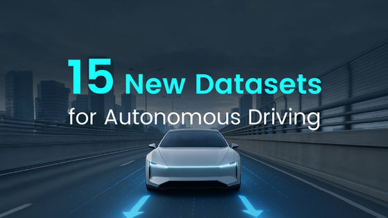

本記事は、2024〜2025年にかけて公開された自動運転向けAIデータセット15件を紹介するブログ記事（basic.ai）である。4Dレーダー、悪天候、商用トラック、新型センサーなど、既存の主要データセットが十分にカバーしていなかった領域を補う専門的データセットが数多く登場している。
品質の高いデータセットが自動運転の進歩を牽引してきた。KITTIは3D物体検出の時代を開き、nuScenesがマルチモーダル知覚を前面に押し出した。Waymo Open Datasetはスケールのある実世界データを提供し、Cityscapesが都市シーン理解を定義した。それぞれのデータセットが、自動運転への取り組み方に転換点をもたらしてきた。
しかし、分野はこれらの基盤を超えつつある。多くのデータセットが高速道路を走る乗用車に焦点を当てており、大きなブラインドスポットが残っている。商用車は異なる動作をし、4Dレーダーのような新しいセンサーにはデータが必要だ。悪天候は現行システムを壊し、エンドツーエンドの運転にはビジョン・言語・アクションのデータが連携して機能することが求められる。本記事では、こうした課題に対応する15件の新しいAIデータセットを紹介する。
キーワード：低速自動運転、近距離知覚、マルチモーダル融合
上海交通大学とSenseAuto Researchが2024年に構築した RoboSense は、見落とされがちな領域——配達ロボットや道路清掃車のような低速自律走行車——を対象としている。これらの車両は、歩行者が間近にいたり、障害物が突然現れたりする独特の課題に直面する。電動清掃車に4台の標準カメラ、4台の魚眼カメラ、4台のLiDARなどを搭載し、360度全方位カバレッジを実現。データセットは13万3千枚以上の同期フレームと140万の3Dバウンディングボックス、21万6千の軌跡を含む。
キーワード：自動運転トラック、4Dレーダー、長距離知覚
ミュンヘン工科大学とMAN Truck & Bus SEが2024年に共同リリースした MAN TruckScenes は、自動運転トラック向けに特化した初の大規模マルチモーダルデータセットである。トレーラーによる遮蔽、動的な車両構成、物流ターミナル環境といったトラック特有の課題を含む747シーンを収録。360度の4Dレーダーデータを初めて提供した最大規模のアノテーション済み3Dバウンディングボックスレーダーデータセットである。3つの季節と複数の気象条件をカバーし、アノテーションは230メートル超の範囲に及ぶ。
キーワード：マルチレーンシナリオ、エンドツーエンド自動運転
2025年にリリースされた Para-Lane は、レーン間シナリオ全体での新規ビュー合成（NVS）能力を評価するために設計された、初の実世界マルチレーンデータセットである。1万6千枚の前方ビュー、6万4千枚のサラウンドビュー、1万6千枚のLiDARフレームを含む25の連結シーケンスを提供。現在のNVS手法が補間に最適化されていて車線変更に必要な横移動には対応できていないという課題を補完し、並列経路計画の検証を加速させることが期待される。
キーワード：オキュパンシー予測、ボクセルフロー、ドメイン間汎化
2025年リリースの UniOcc は、オキュパンシー知覚と予測を単一のベンチマークに統合している。nuScenesとWaymoの実世界データ、CARLAとOpenCOODのシミュレーション環境を統合し、2,152シーケンスで計14.2時間のデータを収録。各ボクセルには前後のフロー情報アノテーションが付与されており、オキュパンシーレベルでの動き予測が可能となる。マルチドメイン学習によりドメイン汎化が向上することも確認されている。
キーワード：悪天候、協調知覚、強光シミュレーション
Adver-City は、協調知覚テストを意図的な悪天候条件下で行うためのデータセットである。事故報告書の分析に基づき、最も危険な道路構成を再現。CARLAとOpenCDAで構築され、24K枚の890Kアノテーション付きフレームを含む110シーンを収録。晴天、小雨、大雨、霧、霧雨、強光の6気象条件を含み、まぶしいグレアをシミュレートした初のデータセットでもある。
キーワード：生成AI、アウトペインティング技術、自己アノテーション
イリノイ大学アーバナシャンペーン校が2024年に採用した AIDOVECL は、AIがデータを生成するアプローチである。1万5千枚の手動選択シード画像から始め、拡散モデルで色調・スケール・背景を変えてアウトペインティングする。この「アウトペインティングによる自己アノテーション」手法により、すべての生成画像に9車両カテゴリの精密なバウンディングボックスが自動付与される。
キーワード：ステップバイステップ推論、マルチモーダル理解、運転シーン分析
DriveLMM-o1 は、自動運転シナリオでのステップバイステップ推論のために設計された最初の包括的データセット兼ベンチマークである。1万8千超のトレーニングサンプルと4千のテストサンプルを含み、知覚・予測・計画の3コアタスクをカバー。nuScenesを基盤にマルチビュー画像とLiDAR点群を統合し、各質問に完全な推論アノテーションを提供している。このデータでファインチューニングしたInternVL2.5モデルは回答精度が7.49%向上した。
キーワード：テールライト検出、運転意図認識、車両信号
2024年リリースの TLD は、初の大規模車両テールライト信号検出データセットである。17.78時間の走行映像から15万2,690枚のアノテーション済みフレームと30万7,509インスタンスを収録。昼夜・気象変化・都市/高速道路/農村の各環境をカバーする。テールライト信号の理解により、自動運転車が他のドライバーの意図をより正確に予測できるようになる。
キーワード：ビジョン言語アクション、エンドツーエンド運転、軌跡予測
Turing Inc.が2024年にリリースした CoVLA は、視覚理解・言語記述・精密な行動計画を組み合わせたアノテーションを持つ最初の大規模VLAデータセットである。東京の1,000時間超の走行データから1万シーン（80時間超）を選択。フロントカメラ、CANバス、GNSS、IMUのマルチセンサー情報を統合し、詳細な自然言語記述と3秒先の軌跡アノテーションを提供する。
キーワード：オープンワールド知覚、エッジケース検出、ドメイン汎化
OpenAD は、工事区間、落下した荷物、通常とは異なる車両といったオープンワールドシナリオ向けの初のベンチマークである。Argoverse 2、KITTI、nuScenes、ONCE、Waymoの5つの主要データセットから2,000シーンを選択し、206カテゴリにわたる6,597のエッジケースオブジェクトと1万3,164の一般オブジェクトにアノテーションを付与。MLLMを活用した自動シーン識別パイプラインを採用している。
キーワード：4Dレーダー、V2X協調知覚、マルチモーダル知覚
清華大学らが2024年にリリースした V2X-Radar は、4Dレーダーを含む世界初の大規模車両インフラ協調知覚データセットである。2万枚のLiDARフレーム、4万枚のカメラ画像、2万枚の4Dレーダーフレームを含み、35万件のアノテーション済みボックスを提供。多様な気象条件と複雑な交差点をカバーする。
キーワード：V2X協調知覚、4Dレーダー融合、デノイジング拡散
廈門大学の V2X-R はシミュレーション環境でのLiDAR・カメラ・4Dレーダー融合に焦点を当てている。1万2,079シーン、3万7,727の点群フレーム、15万908枚の画像を収録し、霧・雪を含む悪天候シミュレーションを重視。マルチモーダルデノイジング拡散（MDD）モジュールにより、天候に強い4Dレーダー特徴でノイズの多いLiDARデータをクリーンアップするアプローチを採用している。
キーワード：新規ビュー合成、自動運転、オフアクシス評価
Wayveが2024年にリリースした WayveScenes101 は、自動運転シナリオの新規ビュー合成向けに設計された大規模データセットである。米英各地の多様なロケーションから20秒の走行シーケンス101件、計10万1,000枚の画像を提供。COLMAPポーズと詳細なメタデータ（気象・時刻・交通量）を含み、車線変更や緊急回避といったシナリオでのビュー生成を評価するオフアクシス評価に特化している。
キーワード：128チャンネルLiDAR、パノラマ画像、単眼深度推定
ダラム大学が2024年に公開した DurLAR は、128チャンネルのLiDARを使用した高解像度データセットである。2,048×128のパノラマ画像をアンビエント（近赤外線）とリフレクタンスの両モードで生成。マルチビームフラッシュ技術によりローリングシャッターのアーティファクトを排除。繰り返しルートで10万枚のフレームを収集し、高密度LiDARデータを活用した深度推定向けの教師あり/自己教師ありの混合損失関数も開発している。
2024〜2025年に登場したこれら15のデータセットは、自動運転研究のニーズが多様化・専門化していることを示している。商用車・低速車・悪天候・V2X協調・エンドツーエンド運転・オープンワールドシナリオ・新型センサーなど、これまでの主要データセットが十分にカバーしていなかった領域が急速に埋まりつつある。今後の自動運転システム開発においては、これらの専門化されたデータセットが研究の重要な基盤となるだろう。